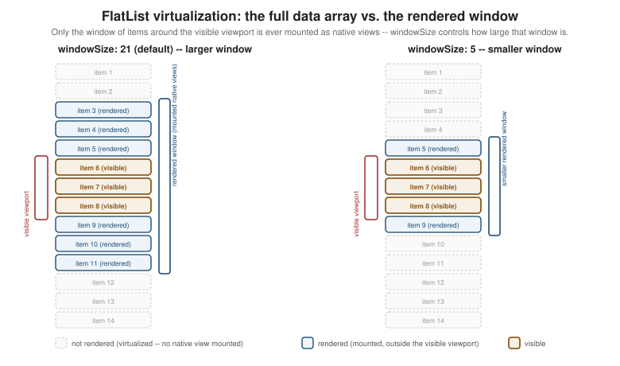

Lists and Scrolling
|
This content was generated with the assistance of AI and should be verified against the official documentation before being relied on in production. |
Core Components and React Fundamentals
introduced ScrollView, FlatList, and SectionList in passing, as three of the Core Components every screen
draws from. This page covers scrolling and lists in full — when to reach for each of the four scrolling
primitives, how to keep a long FlatList fast (sorting, filtering, pagination, pull-to-refresh, visibility
tracking, and the performance-tuning props that matter most), and Shopify’s FlashList as a drop-in alternative — ending with Places's own PlacesListScreen, the searchable, paginated, pull-to-refreshable list screen that
Navigation (later in this section) wires up as the app’s home screen.
ScrollView, FlatList, SectionList, and VirtualizedList
React Native ships four scrolling primitives, and choosing the right one is mostly a question of one thing: does every row need to exist as a real, mounted native view at once, or does the data set need to be virtualized so only the rows near the viewport ever mount?
ScrollView: Everything, Rendered Up Front
ScrollView renders all of its children immediately, whether or not they are currently visible, and then
scrolls the resulting content — exactly like a plain, overflow-scrolling View would. That makes it the right
choice for content that is short and bounded (a settings screen, a form, a details screen’s body) and the wrong
choice for anything unbounded, because memory and initial render time both grow linearly with the number of
children, with no upper bound:
import { ScrollView, View, Text, StyleSheet } from 'react-native';
function PlaceDetailsBody({ place }: { place: Place }) {
return (
<ScrollView
contentContainerStyle={styles.content}
keyboardShouldPersistTaps="handled"
>
<Text style={styles.name}>{place.name}</Text>
<Text style={styles.notes}>{place.notes}</Text>
{/* ...more sections, all mounted at once... */}
</ScrollView>
);
}
const styles = StyleSheet.create({
content: { padding: 16, paddingBottom: 32 },
name: { fontSize: 20, fontWeight: '700' },
notes: { fontSize: 15, marginTop: 8 },
});A few ScrollView props matter enough to call out by name:
-
contentContainerStylestyles the scrollable content itself (padding, alignment) as opposed tostyle, which styles the outer, non-scrollingScrollViewcontainer — confusing the two is the most commonScrollViewlayout bug, since padding onstyleclips instead of scrolling. -
horizontalswitches the scroll axis to horizontal (a row of photo thumbnails, a category chip row), withshowsHorizontalScrollIndicator={false}the usual companion for a chip row that should not show a scrollbar. -
pagingEnabledsnaps scrolling to multiples of the `ScrollView’s own width/height — the standard way to build a horizontal, one-screen-at-a-time image carousel or onboarding flow without any gesture math of your own. -
keyboardShouldPersistTapscontrols whether a tap on a child (a button, anotherTextInput) while the keyboard is open dismisses the keyboard first ('never', the default) or delivers the tap directly ('handled'/'always') —'handled'is what a form inside aScrollViewalmost always wants, so tapping a "Save" button works on the first tap rather than only dismissing the keyboard.
FlatList: Virtualized Rendering
FlatList is the default choice for anything that is a list rather than a fixed page of content — Places's
own list of places, potentially hundreds or thousands of rows. Instead of mounting every row, it virtualizes:
only the rows near the current viewport are actually mounted as native views at any given time, with rows that
scroll far enough away being unmounted (or recycled) and re-mounted again if scrolled back into range. Three
props are mandatory, not optional:
import { FlatList } from 'react-native';
import { PlaceCard } from '../components/PlaceCard';
import type { Place } from '../types';
function PlacesList({ places }: { places: Place[] }) {
return (
<FlatList
data={places}
renderItem={({ item }) => (
<PlaceCard place={item} onPress={handlePress} onToggleFavourite={handleToggleFavourite} />
)}
keyExtractor={(item) => item.id}
/>
);
}-
data— the array to render;FlatListnever mutates it. -
renderItem— called only for rows currently within the virtualization window (below), receiving{ item, index }. -
keyExtractor— returns a stable, unique key per row (place.id, never the arrayindex, which shifts identity on insert/delete/sort and would makeFlatListreconcile the wrong row against the wrong native view).
Beyond the three mandatory props, a handful round out most real screens:
-
ListHeaderComponent/ListFooterComponent— content rendered once, above/below the data (a screen title, a "load more" spinner), scrolling together with the list rather than being pinned outside it. -
ListEmptyComponent— rendered instead of the list body whendatais empty (a "No places yet — add your first one" placeholder), so an empty state never has to be handled with a separate conditional around the wholeFlatList. -
horizontal— the same horizontal-scroll switchScrollViewhas, still fully virtualized. -
numColumns— lays rows out in a grid of N columns instead of a single column; changing it at runtime requires remounting the list (via a changingkeyprop), sinceFlatListcomputes its grid layout only once. -
extraData— an extra valueFlatListwatches for changes to decide whether to re-render rows whoserenderItemclosure depends on something outsideitemitself (aselectedIdheld in the parent, for example) — without it, a row can visibly go stale becauseFlatList’s own shallow-compare optimization sees no change in `dataorrenderItemidentity. -
getItemLayout— when every row has a known, fixed height, supplying(data, index) ⇒ ({ length, offset, index })letsFlatListcompute any row’s position synchronously instead of measuring it, which removes both a layout pass and the "jump" that can otherwise happen when scrolling to a far-away row (e.g. viascrollToIndex) before its neighbors have been measured.

As the figure shows, only a window of items around the visible viewport is ever mounted as real native views;
everything outside that window exists solely as data, not as a rendered row — this is the mechanism the
performance-tuning props below (windowSize, initialNumToRender, maxToRenderPerBatch) all control directly.
SectionList: Grouped Data with Sticky Headers
SectionList is FlatList’s sibling for data that is naturally grouped into sections, each with its own header — Places grouped by category or by visit month, for example. It replaces the flat `data array with a
sections array of { title, data } groups, and adds renderSectionHeader:
import { SectionList, Text, View } from 'react-native';
import { PlaceCard } from '../components/PlaceCard';
import type { Place, PlaceCategory } from '../types';
interface PlaceSection {
title: PlaceCategory;
data: Place[];
}
function PlacesBySection({ sections }: { sections: PlaceSection[] }) {
return (
<SectionList
sections={sections}
keyExtractor={(item) => item.id}
renderItem={({ item }) => (
<PlaceCard place={item} onPress={handlePress} onToggleFavourite={handleToggleFavourite} />
)}
renderSectionHeader={({ section }) => (
<View style={{ padding: 8, backgroundColor: '#f2f2f2' }}>
<Text style={{ fontWeight: '700' }}>{section.title}</Text>
</View>
)}
stickySectionHeadersEnabled
/>
);
}stickySectionHeadersEnabled (the default on iOS, opt-in on Android) pins the current section’s header to the
top of the viewport while its rows scroll underneath, the same behavior an iOS Contacts-style grouped list has
natively.
VirtualizedList: The Primitive Underneath
VirtualizedList is the lower-level component FlatList and SectionList are both thin wrappers over — it
implements the actual windowing algorithm (deciding which items fall inside the rendered window, mounting and
unmounting rows as the viewport moves) against a more general data interface (getItem, getItemCount) rather
than a plain array. Reaching for VirtualizedList directly is rare in application code — it exists mainly so a
data structure that is not a plain JavaScript array (a linked list, a paginated store with its own indexing) can
still be virtualized without first being copied into one — and every prop covered above for FlatList (aside
from the array-shaped data itself) is really a VirtualizedList prop inherited through that wrapper.
Search, Filtering, Pagination, and Performance
A list screen rarely just renders a static array — it sorts or filters that array, loads more of it as the user scrolls, refreshes it on demand, and, at scale, needs deliberate tuning to stay smooth. This section works through each concern in isolation before combining all of them into Places's own list screen.
Sorting and Filtering with useMemo
Sorting or filtering an array on every render — including renders triggered by something unrelated, like a
sibling component’s state changing — recomputes work that did not need to change. useMemo recomputes only when
its dependencies actually change:
const favouritesFirst = useMemo(
() => [...places].sort((a, b) => Number(b.favourite) - Number(a.favourite)),
[places],
);
const restaurantsOnly = useMemo(
() => places.filter((place) => place.category === 'restaurant'),
[places],
);[…places].sort(…) copies the array before sorting — Array.prototype.sort mutates in place, and mutating
a prop or a query’s cached data directly is exactly the kind of bug that only shows up later, once something else
reads that same reference and finds it silently reordered.
A Responsive Search Box with useDeferredValue
A search box that filters a large list on every keystroke can make typing itself feel laggy, because each
keystroke’s state update and the (possibly expensive) filter it triggers are treated as equally urgent by React.
useDeferredValue splits them apart: the input’s own value updates immediately, while a deferred copy of that
value — which the filtering useMemo depends on instead of the raw value — is allowed to lag a render or two
behind under load, so React can keep the input responsive and catch the filtered list up shortly after:
import { useDeferredValue, useMemo, useState } from 'react';
function usePlacesSearch(places: Place[]) {
const [query, setQuery] = useState('');
const deferredQuery = useDeferredValue(query);
const filteredPlaces = useMemo(() => {
const needle = deferredQuery.trim().toLowerCase();
if (needle === '') {
return places;
}
return places.filter((place) => place.name.toLowerCase().includes(needle));
}, [places, deferredQuery]);
return { query, setQuery, filteredPlaces, isStale: query !== deferredQuery };
}isStale (query !== deferredQuery) is optional but useful — it is true for the brief window where the input
already shows the new characters but filteredPlaces still reflects the previous query, a common signal for
dimming the list slightly until the deferred value catches up.
Pagination with onEndReached
onEndReached fires once the user has scrolled within onEndReachedThreshold (a fraction of the viewport’s
length, e.g. 0.5 for "half a screen from the end") of the list’s end — the standard way to fetch the next page
of an unbounded data set without a dedicated "Load more" button:
<FlatList
data={places}
renderItem={renderItem}
keyExtractor={keyExtractor}
onEndReached={() => {
if (hasNextPage && !isFetchingNextPage) {
fetchNextPage();
}
}}
onEndReachedThreshold={0.5}
/>Guarding with hasNextPage/isFetchingNextPage matters because onEndReached can fire more than once while the
user keeps scrolling near the end — without the guard, the same page gets requested multiple times in flight.
Pull-to-Refresh with RefreshControl
RefreshControl wraps FlatList’s native pull-to-refresh gesture — the spinner that appears when the user
pulls the list down past its top — and is handed to `FlatList (or ScrollView) through the refreshControl
prop rather than as a child:
<FlatList
data={places}
renderItem={renderItem}
keyExtractor={keyExtractor}
refreshControl={<RefreshControl refreshing={isRefetching} onRefresh={refetch} />}
/>refreshing controls whether the spinner is currently shown (driven by the query’s own in-flight state, not a
separately tracked boolean) and onRefresh is called once when the gesture completes; the two are deliberately
decoupled, so a manual refetch() call from somewhere else in the app still shows the same spinner correctly.
Tracking Visible Rows with onViewableItemsChanged
onViewableItemsChanged is called whenever the set of rows considered "visible" changes, according to
viewabilityConfig — the mechanism behind marking a place as "seen" for analytics, lazily loading a row’s photo
only once it is actually on screen, or auto-playing a video only in the row currently centered in the viewport:
import { useRef } from 'react';
import type { ViewToken } from 'react-native';
const viewabilityConfig = { itemVisiblePercentThreshold: 50 };
function PlacesListWithTracking({ places }: { places: Place[] }) {
const onViewableItemsChanged = useRef(({ viewableItems }: { viewableItems: ViewToken[] }) => {
const visibleIds = viewableItems.map((token) => (token.item as Place).id);
// e.g. send visibleIds to analytics, or mark them as seen
}).current;
return (
<FlatList
data={places}
renderItem={renderItem}
keyExtractor={keyExtractor}
onViewableItemsChanged={onViewableItemsChanged}
viewabilityConfig={viewabilityConfig}
/>
);
}Both viewabilityConfig and onViewableItemsChanged must keep a stable identity across renders — FlatList
warns (and can behave incorrectly) if either changes on every render, which is why onViewableItemsChanged above
is wrapped in useRef rather than declared as a plain inline function.
Performance-Tuning Props and Memoized Rows
Four FlatList props tune the virtualization window the earlier figure illustrates, trading memory for scroll
smoothness in either direction:
| Prop | Effect |
|---|---|
|
How many rows render on first mount, before any scrolling — lower it for a row that is expensive to render, so the list appears sooner even if it briefly shows fewer rows than the viewport could hold. |
|
How many additional rows render per batch while scrolling — a smaller value spreads rendering work across more frames (smoother scrolling, slower to "fill in" newly revealed rows); a larger value does the opposite. |
|
The size of the rendered window itself, in multiples of the viewport’s length (the default, |
|
When |
The other half of keeping a long list smooth is making sure renderItem does not force every row to re-render on
every parent update. Wrapping the row component in React.memo — reusing, not redefining,
PlaceCard's established shape — combined
with a renderItem and keyExtractor that keep a stable identity across renders (useCallback, as in
Places's own screen below) is what lets that memoization actually take effect:
import { memo } from 'react';
import { PlaceCard } from '../components/PlaceCard';
const MemoizedPlaceCard = memo(PlaceCard);Without a stable renderItem identity, a new function is created on every render of the parent screen, which
defeats React.memo on the row entirely — FlatList sees a "new" renderItem reference and treats every row as
possibly changed.
FlashList: A Drop-In, Better-Performing Replacement
Shopify’s FlashList targets the exact same problem as FlatList — rendering a long list efficiently — with a different recycling strategy (reusing existing native view instances
for new rows scrolling into view, rather than mounting and unmounting), which in practice yields noticeably
smoother scrolling and lower memory use on long or complex lists, especially with variable row heights. It is
close enough to a drop-in replacement that most of the props already covered above (data, renderItem,
keyExtractor, onEndReached, refreshControl, onViewableItemsChanged) carry over unchanged:
import { FlashList } from '@shopify/flash-list';
import { PlaceCard } from '../components/PlaceCard';
import type { Place } from '../types';
function PlacesFlashList({ places }: { places: Place[] }) {
return (
<FlashList
data={places}
renderItem={({ item }: { item: Place }) => (
<PlaceCard place={item} onPress={handlePress} onToggleFavourite={handleToggleFavourite} />
)}
keyExtractor={(item) => item.id}
estimatedItemSize={84}
/>
);
}The one prop FlashList adds that FlatList has no equivalent for is estimatedItemSize — a rough average row
height in points, used to pre-size the recycling pool before any row has actually been measured; getting it
roughly right (rather than exactly right) is enough to get most of FlashList’s performance benefit, and newer
FlashList versions can estimate it automatically when it is omitted. For most new lists in a React Native app,
including Places's own list below, FlashList is a reasonable default to reach for directly rather than a
later optimization step — FlatList remains covered in full above because it is still the built-in, dependency-free
choice, and because understanding its virtualization model is what makes FlashList’s own behavior legible.
Places: The Places List Screen
Places's list screen is built on usePlaces(), a TanStack Query useInfiniteQuery Hook that paginates through
placesApi.listPlaces using each page’s nextCursor:
// src/features/places/hooks/usePlaces.ts
import { useInfiniteQuery } from '@tanstack/react-query';
import { placesApi } from '../api/placesApi';
export function usePlaces() {
return useInfiniteQuery({
queryKey: ['places'],
queryFn: ({ pageParam }) => placesApi.listPlaces(pageParam),
initialPageParam: undefined as string | undefined,
getNextPageParam: (lastPage) => lastPage.nextCursor ?? undefined,
});
}Each call to queryFn returns a PlacesPage ({ items, nextCursor }); getNextPageParam reads that page’s
nextCursor to decide what the next queryFn call’s pageParam should be, and returning undefined once
nextCursor is null is what tells useInfiniteQuery there is no further page to fetch (its hasNextPage
becomes false). The full range of TanStack Query’s own caching, retry, and mutation behavior is covered in full
on Networking and Data Fetching (later in this
section); this page only needs the paginated shape usePlaces() hands back.
PlacesListScreen combines that Hook with the search box, pagination, and pull-to-refresh patterns above:
// src/features/places/screens/PlacesListScreen.tsx
import { useCallback, useDeferredValue, useMemo, useRef, useState } from 'react';
import { ActivityIndicator, RefreshControl, Text, TextInput, View } from 'react-native';
import { FlashList } from '@shopify/flash-list';
import type { ListRenderItemInfo } from 'react-native';
import { usePlaces } from '../hooks/usePlaces';
import { PlaceCard } from '../components/PlaceCard';
import type { Place } from '../types';
import { useTheme } from '../../../theme/ThemeProvider';
interface PlacesListScreenProps {
onOpenPlace: (placeId: string) => void;
onToggleFavourite: (placeId: string) => void;
}
export function PlacesListScreen({ onOpenPlace, onToggleFavourite }: PlacesListScreenProps) {
const theme = useTheme();
const [query, setQuery] = useState('');
const deferredQuery = useDeferredValue(query);
const { data, fetchNextPage, hasNextPage, isFetchingNextPage, refetch, isRefetching, isLoading } = usePlaces();
const places = useMemo<Place[]>(() => data?.pages.flatMap((page) => page.items) ?? [], [data]);
const filteredPlaces = useMemo(() => {
const needle = deferredQuery.trim().toLowerCase();
if (needle === '') {
return places;
}
return places.filter((place) => place.name.toLowerCase().includes(needle));
}, [places, deferredQuery]);
const renderItem = useCallback(
({ item }: ListRenderItemInfo<Place>) => (
<PlaceCard place={item} onPress={onOpenPlace} onToggleFavourite={onToggleFavourite} />
),
[onOpenPlace, onToggleFavourite],
);
const keyExtractor = useCallback((item: Place) => item.id, []);
const handleEndReached = useCallback(() => {
if (hasNextPage && !isFetchingNextPage) {
fetchNextPage();
}
}, [hasNextPage, isFetchingNextPage, fetchNextPage]);
return (
<View style={{ flex: 1, backgroundColor: theme.colors.background }}>
<TextInput
value={query}
onChangeText={setQuery}
placeholder="Search places..."
style={{
margin: theme.spacing.md,
padding: theme.spacing.sm,
borderRadius: 8,
backgroundColor: theme.colors.surface,
color: theme.colors.text,
}}
/>
<FlashList
data={filteredPlaces}
renderItem={renderItem}
keyExtractor={keyExtractor}
estimatedItemSize={84}
onEndReached={handleEndReached}
onEndReachedThreshold={0.5}
refreshControl={<RefreshControl refreshing={isRefetching} onRefresh={refetch} />}
ListFooterComponent={
isFetchingNextPage ? <ActivityIndicator style={{ margin: theme.spacing.md }} /> : null
}
ListEmptyComponent={
!isLoading ? (
<Text style={{ textAlign: 'center', color: theme.colors.textMuted, marginTop: theme.spacing.xl }}>
No places match "{query}".
</Text>
) : null
}
/>
</View>
);
}A few things worth calling out about how the pieces fit together:
-
Filtering happens client-side, over the already-fetched, flattened
placesarray —deferredQuery(not the rawquery) is whatfilteredPlacesdepends on, so fast typing never makes the search box itself feel laggy whilefilteredPlacesrecomputes. -
handleEndReachedtriggersfetchNextPage()against the unfilteredusePlaces()query regardless of whether a search is active — scrolling to the end of a filtered view still paginates the full data set, since the alternative (a server-side search endpoint) is a larger change covered on Networking and Data Fetching, not this page. -
refreshControl’s `refreshingisisRefetching— TanStack Query’s own "a refetch of already-cached data is in flight" flag — rather thanisLoading, which is true only for the very first fetch and would otherwise leave the pull-to-refresh spinner stuck on during every subsequent refresh. -
renderItemandkeyExtractorare both wrapped inuseCallbackwith stable dependencies, soPlaceCardrows are not needlessly re-created across renders ofPlacesListScreenitself, matching the memoization guidance above.